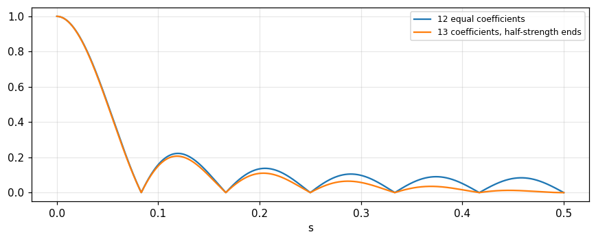
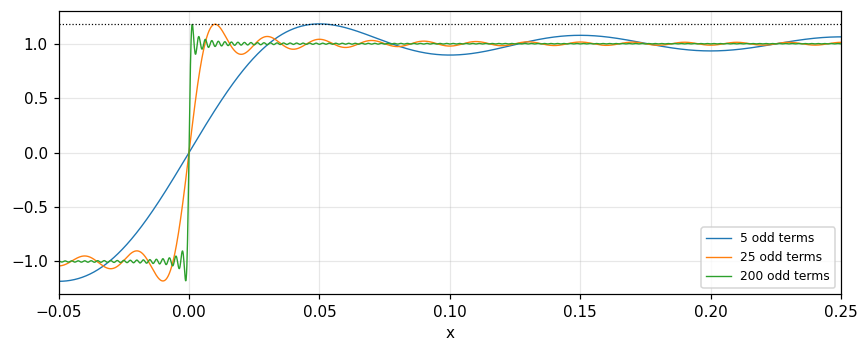
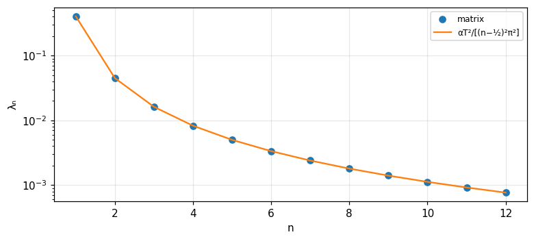

Sampling, Fourier series and orthogonal representation
The sampling theorem, interpolation, rectangular filtering, aliasing, ordinate-and-slope and interlaced sampling, Fourier series and Gibbs (Bracewell) to generalised Fourier series, Gram-Schmidt, integral equations and the Karhunen-Loève expansion (Barkat).
Lecture (slides) Hands-on with the Jupyter Notebook Self-check quiz
Lecture (slides)
Sampling, Fourier series and orthogonal representation
- State and prove the sampling theorem with the shah symbol; sinc interpolation; recognise aliasing and the boundary cases (a harmonic exactly at the cutoff).
- Use ordinate-and-slope and interlaced sampling, and know why they amplify noise.
- View the Fourier series as a transform in the limit; compute coefficients with finite transforms and explain the 9 percent Gibbs overshoot.
- Expand a signal in an orthonormal set, the energy error, Gram-Schmidt (classical and modified), geometric representation in signal space.
- Turn differential equations into integral equations through Green's function, and use the Karhunen-Loève expansion for random processes (Wiener, exponential, white noise).
Use the buttons, the dots or the ← → keys to move between slides.
The sampling theorem and interpolation
- Statement and proof
- Interpolation and rectangular filtering
- Running means and aliasing
Why sampling is possible
In nature there is always a limit to the rate of change, so values at neighbouring instants are related and can be predicted over a brief interval. Values can then be dispensed with over intervals of the same order while nearly all the information is kept by noting a set of values at fine but not infinitesimal spacing (Bracewell, chapter 10, p. 219). The sampling theorem says that, under a condition, the values between regularly spaced samples can be recovered with full accuracy; the condition is that the function be band-limited. Digital signal processing can be applied to the sample set while the theory of functions of a continuous variable clarifies the basis of DSP (p. 219).
The surprisingly coarse sampling interval
For \text{sinc}\,x the spectrum is flat for |s|<\tfrac12 and zero beyond; the sampling interval deduced is 1, extremely coarse compared with what would intuitively be chosen for numerical integration (Fig. 10.1, p. 220). The samples of \text{sinc}\,x at integers are 1,0,0,\ldots and those of \text{sinc}^2\tfrac12x (same cutoff \tfrac12) are equally coarse. But the transform almost never cuts off absolutely, so when using the theorem we must estimate the error of taking a waveform to be band-limited (p. 220). Measured: reconstructing f=\text{sinc}^2(x/2) (spectrum 2\Lambda(2s), cutoff \tfrac12) from samples at integers, at x=0.5, deviates by 3e-12 from the exact value.
Cutoff transforms
A function f(x) with F(s)=0 for |s|>s_c is band-limited; a transform of the form \Pi(s/2s_c)G(s) with arbitrary G is called a cutoff transform, and the functions have the form \text{sinc}\,2s_cx*g(x) with arbitrary g. The peculiar property: band-limited functions are fully specified by values at equal intervals not exceeding \tfrac1{2s_c}, with one exception (p. 221). The proof uses the shah symbol since multiplying by \text{III}(x) is sampling: information is kept at the sample points and dropped in between; and \text{III}(x)\supset\text{III}(s).
Proof by shah: replicating the spectrum
The sampled function f(x)\text{III}(x/\tau)=\sum f(n\tau)\delta(x-n\tau) retains information only at x=n\tau. The transform of \text{III}(x/\tau) is \tau\text{III}(\tau s), a row of unit impulses at spacing \tau^{-1}; by the convolution theorem f\,\text{III}(x/\tau)\supset\tau\text{III}(\tau s)*F(s): sampling replicates the spectrum F at period \tau^{-1} (Bracewell, pp. 221 to 223). We recover f if we can recover F, by multiplying by \Pi(s/2s_c). This is impossible if the "islands" overlap, i.e. when \tau^{-1}<2s_c: \tau\le1/2s_c, and critical sampling has the islands just touching (Figs. 10.3, 10.4).
The boundary case: a harmonic exactly at the cutoff
If F(s_c)\ne0 and we sample critically the islands make butt contact at the cliffs; multiplying by \Pi(s/2s_c) (equal to \tfrac12 at s=s_c) still recovers exactly. But if f contains a harmonic component of frequency s_c there is more to say: the even (cosine) part is recovered, the odd (sine) part disappears since the impulses B and B' fuse and cancel (pp. 223 to 224). The full statement of the theorem: a function whose transform vanishes for |s|>s_c is specified by values at equal intervals not exceeding \tfrac1{2s_c}, save for any harmonic term with zeros at the sampling points. Exercise: \cos(\omega t-\phi) sampled at the critical interval (a half period): the samples are exactly those of the even part \cos\phi\cos\omega t; measured deviation 6e-13.
Interpolation
Multiplying the transform by \Pi(s/2s_c) corresponds to convolution with 2s_c\,\text{sinc}\,2s_cx in the function domain, giving f(x) directly from \text{III}(x/\tau)f(x): convolution with a row of impulses reduces exactly to a sum (serial product): f(x)=\sum f(n\tau)\,\text{sinc}\,\dfrac{x-n\tau}{\tau} (p. 224). Midpoint interpolation uses Table 10.1 of \text{sinc}\,x at half-integers: 0.6366, -0.2122, 0.1273, -0.0909, 0.0707, \ldots; measured: \text{sinc}(0.5) = 0.6366, \text{sinc}(1.5) = -0.2122, \text{sinc}(2.5) = 0.1273, \text{sinc}(3.5) = -0.0909.
Rectangular filtering by a sinc sum
To remove components beyond a limit, multiply the transform by \Pi(s) (s_c=\tfrac12, critical interval 1). With sampling interval \tau=1 we get \sum f(n)\text{sinc}(x-n), no filtering at all (f(x) intact); with \tau=\tfrac12 the output spectrum consists of F\,\Pi plus remoter parts, enough when the components to be rejected lie just beyond the central region. Repeated use of the same array at \tau=\tfrac12 pushes down more of the outer islands (Fig. 10.5). Result: read off f at half the critical interval and take the serial product with 2s_c\text{sinc}\,2s_cx at all half-integral values of 2s_cx; the filtering array (Table 10.2) consists of the interpolation values plus interleaved zeros and a central 1: \ldots,-0.2122,0,0.6366,1,0.6366,0,-0.2122,\ldots (pp. 224 to 226).
Running means: the transfer function of N coefficients
Convolution with a rectangle of width W has transfer function \text{sinc}\,Ws, equivalent bandwidth 1/W and 3 dB bandwidth 0.8859/W, but the fall-off is not sharp enough and there is strong oscillation outside the band. With W=12 (12-month running means from data one month apart) we have 12 impulses of strength \tfrac1{12}, and the transfer function is a geometric series: \dfrac{\sin N\pi s}{N\sin\pi s} (the field pattern of an array of N equally spaced antennas). Meteorology uses 13 coefficients with half strength at the ends: \dfrac{\sin N\pi s}{N\tan\pi s}, reducing the sidelobes (Bracewell, pp. 226 to 228). Measured: the 3 dB bandwidth 0.8859; the first sidelobe of the 12-coefficient filter 0.2224 and of the 13-coefficient filter 0.207.

Undersampling and aliasing
If f is read off at intervals corresponding to a desired cutoff, the values define a band-limited function g(x) with the spectrum cut off at the desired place, but this is not rectangular filtering: the result depends on high-frequency components of f (a sample may fall on the peak of a narrow spike) and on the phase of the sampling grid. High-frequency components "impersonate" low frequencies, like a reflection of the spectral tail in s=s_c: this is called aliasing (Bracewell, pp. 229 to 230). The even part of the spectrum is reinforced while the odd part is diminished, so g is "evener" than f. Measured: a wave of frequency 0.8 sampled at interval 1 (cutoff 0.5) appears at frequency 0.2, reflected in 0.5.
Duality: sampling the spectrum
The sampling theorem applies symmetrically in the other domain: if f(x)=0 outside |x|\le x_c (a function of finite duration) then F(s) is determined by samples spaced \tfrac1{2x_c} apart: F(s)=\sum F\!\left(\tfrac n{2x_c}\right)\text{sinc}(2x_cs-n). This is exactly the property the Fourier series uses: the coefficients are samples of the transform of one period (part 3). In short, finite width in one domain permits sampling in the other.
Counting degrees of freedom
A signal band-limited to |s|\le s_c observed for a time T needs 2s_cT free samples. With s_c=5 and T=3: 2\times5\times3=30 values. This is the number of components of the representing vector and a bridge to part 4: such a signal lives in a 30-dimensional signal space, and each independent sample is a coordinate on the sinc basis. It is also why sampling faster than critical adds no information, only redundancy useful for filtering (Bracewell, pp. 224 to 226).
A hand example: midpoint interpolation
Given samples f(-1)=0.2, f(0)=1, f(1)=0.4, f(2)=0 and all others zero, the value at x=0.5 by sinc interpolation: the two nearest samples are each multiplied by 0.6366, the next by -0.2122. We get f(0.5)\approx0.6366(1+0.4)-0.2122(0.2+0)=0.8913-0.0424=0.8488. The coefficients are the row of Table 10.1; higher orders add the coefficients 0.1273, -0.0909 with alternating signs decaying slowly like 1/n, so many samples are needed for high accuracy (Bracewell, p. 224).
A practical guide to choosing the interval
- Determine s_c from the measured spectrum with a margin: the islands must not touch, otherwise aliasing occurs (frequency 0.8 becomes 0.2).
- Filter before sampling to remove the spectral tail; after sampling the overlap cannot be separated.
- If a good rectangular filter is needed, sample at half the critical interval and use the filtering array of Table 10.2.
- Check the error of taking the signal as band-limited, like the error 3e-12 in the first example.
Self-check, part 1
- What is the maximum sampling interval for a function with spectrum cut off at s_c=5?
- What does sampling do to the spectrum?
- Why does a \sin component exactly at the cutoff vanish under critical sampling?
Hints: \tfrac1{2s_c}=0.1; replicates with period \tau^{-1}; because the samples fall exactly on its zeros.
Modified sampling and noise
- Ordinate and slope sampling
- Interlaced sampling
- Sampling in the presence of noise
Ordinate and slope sampling
Suppose f is band-limited and needs ordinates at spacing 0.5, but only \text{III}f is given, i.e. spacing 1: the spectral islands overlap and F cannot be recovered. If the slope \text{III}f' is also given, recovery is possible: in -1<s<1, \text{III}f=F(s+1)+F(s)+F(s-1) and \text{III}f'=i2\pi(s+1)F(s+1)+i2\pi sF(s)+i2\pi(s-1)F(s-1), two equations for F(s) since for each s one of the three unknowns is zero (Bracewell, pp. 230 to 231). Result: f(x)=\sum f(n)\,\text{sinc}^2(x-n)+\sum f'(n)(x-n)\,\text{sinc}^2(x-n), with solving functions a(x)=\text{sinc}^2x and b(x)=x\,\text{sinc}^2x.
Numerical test: f=\text{sinc}\,2x
f(x)=\text{sinc}\,2x has spectrum \tfrac12\Pi(s/2), cutoff 1. The samples at integers are just f(0)=1 and 0 elsewhere, but f'(n)=1/n for n\ne0. Using both sets: at x=0.37 the formula gives 0.3136 against the exact 0.3136; deviation 5.7e-05. With the ordinates alone, \sum f(n)\text{sinc}^2(x-n)=\text{sinc}^2x = 0.6234 is clearly wrong.
Interlaced sampling
Given \text{III}f (every second sample of the necessary set) and a supplementary set \text{III}_af=\text{III}(x-a)f interlaced with the first. Every second jump exceeds the critical interval yet a solution exists: f=a(x)*\text{III}f+b(x)*\text{III}_af, with b(x)=a(-x) and a(0)=1, a zero at every other sample point. The solution is a(x)=\dfrac{\cos(2\pi x-\pi a)-\cos\pi a}{2\pi x\sin\pi a} (Linden, 1959; Bracewell, pp. 232 to 233). As a\to0 it tends to the ordinate-and-slope solution. Measured with a=0.2: a(0) = 1; the zeros at x=1,2,-1 and x=0.2,1.2 deviate by 1e-16; reconstructing \text{sinc}^2x (spectrum up to 1) at x=0.3 deviates by 4e-12.
Bunched samples and the Maclaurin series
Samples may be bunched in groups of any size separated by wide intervals maintaining the original average spacing; Linden proved that the ordinates and first n derivatives at points spaced n+1 times the usual spacing suffice to specify a band-limited function. In the limit n\to\infty the formula becomes the Maclaurin series f(0)+xf'(0)+\tfrac{x^2}{2!}f''(0)+\cdots, which usually does not converge to f(x) (for instance the functions \Pi(ax) for all a have the same Maclaurin series). Bracewell concludes there is doubt about the practicality of higher-order sampling theorems: in practice noise ruins high-order derivatives or finite differences, and perfect band-limitation cannot be ensured (pp. 233 to 234).
Sinc interpolation tolerates noise
If the samples contain errors the reconstructed values are in error too. For midpoint interpolation at x=0 from samples at \pm\tfrac12,\pm\tfrac32,\ldots: f(0)=0.6366[f(\tfrac12)+f(-\tfrac12)]-0.2122[\ldots]+\cdots. The errors at the two nearest samples, each reduced to 0.6366, can range from zero (if they cancel) up to 1.2732 times either error. If the errors are independent with zero mean and variance \sigma^2, the total variance at x=0 is [\ldots+(0.1273)^2+(0.2122)^2+(0.6366)^2+(0.6366)^2+\ldots]\sigma^2, and the series in brackets is the values of \text{sinc}^2x at unit intervals, which add up to 1 (Bracewell, pp. 234 to 235). So the interpolated value has exactly the error of the data: the procedure is tolerant to noise.
Interlaced sampling amplifies noise
At the middle of the wide interval the four nearest samples enter with coefficients a(\tfrac12a+\tfrac12), b(-\tfrac12a+\tfrac12), a(\tfrac12a-\tfrac12), b(\tfrac12a-\tfrac12); because of the factor \cot\pi a the values may be large, so the interpolated value results from cancellation of large terms and the error may be large. A pair f(0)a(x)+f(a)b(x-a) can be re-expressed as the mean of the pair times one coefficient plus the difference of two close samples times another, and the coefficient of the difference term can be large: for a<0.2 it exceeds unity, so errors in the difference term are amplified (pp. 235 to 236). Measured with a=0.2: the sum of squared coefficients at the middle of the wide interval is 5.23 (variance amplification against 1 for uniform interpolation), and with a=0.5 (uniform) it is 1.
The practical lesson
- Sinc interpolation from uniform samples preserves noise variance.
- Interlaced or slope sampling amplifies noise; the errors and the correlation between errors of neighbouring samples must be estimated.
- The sampling theorem always comes with a question: is the function really band-limited, and what is the error of taking it to be?
(Bracewell, pp. 220, 234, 236). This connects with the aliasing of module 14 and with the sampling theorem for random processes of module 12.
Comparing three sampling schemes
| Scheme | Data needed | Noise behaviour |
|---|---|---|
| Uniform, critical | f(n) | keeps the variance (1) |
| Ordinate and slope | f(n),f'(n) | the slope must be measured accurately |
| Interlaced | f(n),f(n+a) | amplifies (5.23) |
All three reconstruct a band-limited function exactly; the difference lies in the sensitivity to data errors.
Why a\to0 leads to the slope
As a\to0 the two samples f(n) and f(n+a) come together; the difference divided by a tends to f'(n), so interlaced sampling tends to ordinate-and-slope sampling. But the kernel a(x) has \sin\pi a in the denominator: an amplification of about 1/\pi a, which magnifies errors of the two close samples. This is the mechanism of noise amplification: a=0.2 gives 5.23 while a=0.5 gives only 1 (Bracewell, pp. 232 to 236).
A hand example: independent sample errors
Suppose each sample has an independent error of standard deviation 0.01. With uniform sinc interpolation the standard deviation of the interpolated value is also 0.01 (a factor of 1). With interlaced a=0.2 the variance is multiplied by 5.23 so the standard deviation by its square root, clearly larger. When the instrument is inaccurate, choose denser uniform sampling instead of interlacing (Bracewell, pp. 235 to 236).
Self-check, part 2
- Why are both ordinates and slopes needed when only half the samples are given?
- Why does sinc interpolation not amplify independent noise?
- Why does closely interlaced sampling have a large \cot\pi a coefficient?
Hints: two equations for one unknown F(s) since the neighbouring islands vanish; \sum\text{sinc}^2(n+x)=1; the two samples are close so a small difference is divided by a small interval.
The Fourier series as a case of the transform
- The Fourier series from the transform in the limit
- Coefficients through finite transforms
- Gibbs and the self-transforming shah
The Fourier series: a reminder
A periodic function g(x) of period T, frequency f=1/T, has the series \dfrac{a_0}2+\sum(a_n\cos2\pi nfx+b_n\sin2\pi nfx) with a_n=\dfrac2T\int g\cos, b_n=\dfrac2T\int g\sin (Bracewell, pp. 235 to 236). Much of the theory of series shows that the series often converges, and when it converges it often converges to \tfrac12[g(x+0)+g(x-0)]. Dirichlet started the rigorous development in 1829 after a controversial period going back to D. Bernoulli (1753, the vibrating string as a sine series), with Euler and Lagrange objecting; when Fourier made the claim in 1807, Lagrange rose and said it was impossible; the dispute led to the invention of the Riemann integral.
A periodic function is \text{III}*f
With T=1, p(x)=\text{III}(x)*f(x)=\sum f(x-n) is the periodic function of period 1 replicating f (absolutely integrable enough to have a transform). p has no regular transform since \int p does not converge, so multiply by a convergence factor \psi(x)=e^{-\pi\tau^2x^2} and let \tau\to0: \Psi*P tends to P, and P(s)=\text{III}(s)F(s)=\sum F(n)\delta(s-n). So the spectrum of a periodic function is a set of impulses whose strengths are equidistant samples of F(s), the transform of a one-period segment (Bracewell, pp. 237 to 239). At x: \int\text{III}(s)F(s)e^{i2\pi sx}ds=\sum F(n)e^{i2\pi nx}, and a_n-ib_n=2F(n), exactly the familiar coefficient formula.
Example: a train of narrow triangles
p=\Lambda(10x)*\text{III}(x) has transform \tfrac1{10}\text{sinc}^2\tfrac{s}{10}\,\text{III}(s): the coefficients F(n)=\tfrac1{10}\text{sinc}^2\tfrac n{10} are just the transform of one triangle read at integers (Fig. 10.15, pp. 243 to 245). For a general period T, F(s)\text{III}(Ts): the coefficients are obtained by reading off the same F(s) at intervals s=T^{-1}. Measured: the sum \sum_nF(n) over |n|\le20000 equals 0.9999, exactly p(0)=1; and for the rectangular pulse train \Pi(10x)*\text{III}(x), F(n)=\tfrac1{10}\text{sinc}\tfrac n{10}, the truncated sum gives 1 at the peak (the mean value at the jump needs infinitely many terms).
From the series to the Fourier integral
The traditional presentation follows history: the periodic function \text{III}*f has a line spectrum \text{III}F (Fourier coefficients). If the period is lengthened to \tau, the lines are packed \tau times more closely and are \tau times weaker; let the period become infinite, so that the pulse f does not recur, the trigonometric sum passes into an infinite integral, and the finite integral specifying the coefficients does likewise: we get the plus-i and minus-i Fourier integrals (Bracewell, p. 239). On the view described here, line spectra and periodic functions are included in the theory of transforms, handled like other transforms by the III symbology with the same caution as for transforms in the limit. A related relation: \text{III}(x/\tau)\supset|\tau|\text{III}(\tau s) (the similarity theorem).
The Gibbs phenomenon
Truncating the series at frequency s_n multiplies the spectrum by \Pi(s/2s_n), i.e. convolves p with (2n+1)s_0\,\text{sinc}[(2n+1)s_0x], of unit area. Near a step \text{sgn}\,x the sum is N\text{sinc}\,Nx*\text{sgn}\,x=\dfrac2\pi\text{Si}(N\pi x): oscillating about -1, growing in amplitude toward the origin, passing through zero, shooting up to a maximum 1.179 and then decaying oscillations about +1 (Bracewell, pp. 240 to 242). Adding terms (larger N) only crowds the oscillations toward the jump: the overshoot remains \approx9 percent of the jump (8.9 percent of the jump of 2), and at the discontinuity the sum tends to the midpoint. Measured from partial sums of a square wave with 200 odd terms: maximum 1.179.

Finite transforms
When the independent variable does not run from -\infty to \infty, the finite transform F(s,a,b)=\int_a^bf(x)e^{-i2\pi xs}dx has an inversion formula, a convolution theorem and derivative theorems; this is the theory of Fourier series. Example: the sine transform on (0,\tfrac12): F_s(s)=\int_0^{1/2}f\sin2\pi xs\,dx and f(x)=4\sum_{s=1}^\infty F_s(s)\sin2\pi xs (Bracewell, p. 242). The consistent way: replace integration over a finite range by infinite integration of a function that is zero outside (a,b), so that all the special properties of finite transforms drop out. Measured with f=x(\tfrac12-x) on (0,\tfrac12): at x=0.2 the sine series gives 0.06 against the exact 0.06.
The derivative theorem with additive terms
The derivative of a truncated function is impulsive at a and b, so the transform of the derivative contains two extra terms proportional to the jumps: \int_a^bf'e^{-i2\pi xs}dx=i2\pi sF(s,a,b)+f(b)e^{-i2\pi bs}-f(a)e^{-i2\pi as} (Bracewell, p. 243). In the infinite-integral theory this need not be mentioned when stating the theorem: the transform of \Pi'(x) is i2\pi s\,\text{sinc}\,s=2i\sin\pi s. Measured with f=x^2 on (0,1) at s=0.3: the two sides differ by 1e-16; and 2i\sin\pi s at 0.3 has magnitude 1.618.
The shah symbol is its own Fourier transform
Consider the sequence f_\tau(x)=\tau^{-1}e^{-\pi\tau^2x^2}\sum_ne^{-\pi(x-n)^2/\tau^2}: a row of narrow Gaussian spikes of width \tau times a broad Gaussian envelope of width \tau^{-1}; as \tau\to0 each spike narrows onto an integer and its area tends to 1, so it is a defining sequence for \text{III}(x). Since \sum_ne^{-\pi(x-n)^2/\tau^2} is periodic, expand it in a Fourier series and apply the shift theorem: the transform is a row of Gaussian spikes of width \tau with maxima on a broad Gaussian of width \tau^{-1}, also defining \text{III}(s) (Bracewell, pp. 246 to 248). The core is the Poisson summation formula. Measured with \tau=0.3, shift 0.1: \sum_ne^{-\pi(n-0.1)^2/\tau^2} and \tau\sum_ke^{-\pi\tau^2k^2}e^{-i2\pi k(0.1)} differ by 1e-16.
Real form and parity
From a_n-ib_n=2F(n): if f is even then F(n) is real and b_n=0, the series contains cosines only; if f is odd then F is purely imaginary and the series contains sines only. The \pm1 square wave is odd, having only odd-harmonic sines with coefficients 4/(\pi k), the basis of the Gibbs computation above. For the even triangle train all sine coefficients vanish and the cosine coefficients 2F(n) are nonnegative, summing to 0.9999 at the origin (Bracewell, pp. 237 to 245).
Discontinuities and the midpoint
At a jump discontinuity the series converges to the mean \tfrac12[g(x+0)+g(x-0)] (Dirichlet), so the \pm1 square wave sums to 0 at the step. The rectangular pulse train sums to 1 at the peak, not exactly 1 due to truncation at 20000 terms, while at the edge it reaches half the value. Note that this pointwise convergence is not uniform: the Gibbs oscillation shows that the maximum error does not decrease (Bracewell, pp. 236, 240 to 242).
The impulse train: shah as a sum of complex exponentials
The spectrum of \text{III}(x) is \text{III}(s): unit impulses at every integer, so every harmonic has equal amplitude and \text{III}(x)=\sum_ne^{i2\pi nx}. The Fourier series of the impulse train does not converge in the ordinary sense but only in the sense of generalised functions; that is why it is defined through a defining sequence (a row of Gaussian spikes) in the previous slide, with the Poisson sum checked numerically to deviation 1e-16 (Bracewell, pp. 246 to 248).
Self-check, part 3
- How is a_n-ib_n related to F(n)?
- Why does the Gibbs overshoot not go away when more terms are added?
- Why is the spectrum of a periodic function a set of impulses?
Hints: a_n-ib_n=2F(n); truncation is convolution with a narrower sinc of the same amplitude; because it is a convolution with \text{III} so the spectrum is multiplied by \text{III}.
Orthogonal functions, Gram-Schmidt and signal space
- Orthogonality and the generalised Fourier series
- Classical and modified Gram-Schmidt
- Geometric representation
From vectors to functions
Two vectors \mathbf X,\mathbf Y are orthogonal if their inner product vanishes; length \|\mathbf X\|=\sqrt{\mathbf X\cdot\mathbf X}, and angle \cos\theta=\dfrac{\mathbf X\cdot\mathbf Y}{\|\mathbf X\|\|\mathbf Y\|}. For finite-energy functions on [0,T]: energy E_k=\int s_k^2dt, norm \|s_k\|=E_k^{1/2}, "distance" \|s_k-s_j\|=[\int(s_k-s_j)^2dt]^{1/2}; orthogonal if \int s_ks_jdt=0 (k\ne j), orthonormal if =\delta_{kj} (Barkat, section 8.2, pp. 449 to 451). These are the concepts Bracewell uses for energy and the power theorem (module 6).
The generalised Fourier series
With an orthonormal set \{\phi_k\} on [0,T], we expand s(t)=\sum s_k\phi_k(t) with s_k=\int_0^Ts(t)\phi_k(t)dt: the generalised Fourier coefficients (Barkat, section 8.2.1, pp. 451 to 452). The finite approximation s_K=\sum_{k\le K}s_k\phi_k; the error \varepsilon_K=s-s_K; minimising the error energy by differentiating with respect to s_k gives exactly these coefficients (second derivative 2, positive). The coefficients give the error energy E_{\varepsilon_K}=E-\sum_{k\le K}s_k^2 (8.23) and, if the set is complete, Parseval's identity E=\sum s_k^2 (8.24), convergence in the mean (l.i.m.).
Measured: the signal s(t)=t on [0,1]
With the cosine basis \phi_0=1, \phi_k=\sqrt2\cos k\pi t: E=1/3; s_0=\tfrac12 and s_k=\sqrt2\,[(-1)^k-1]/(k\pi)^2. After K=5 terms: the error energy 0.0001 computed as E-\sum s_k^2 and by direct integration of the squared error; with K=50 it is 0. It tends to 0 as K\to\infty: the set is complete.
Correlation and the matched filter
The coefficients s_k=\int s\phi_k are computed by a correlation operation (multiply by \phi_k and integrate, Fig. 8.1). An equivalent operation: pass s(t) through filters with impulse response h_k(\tau)=\phi_k(T-\tau) (matched filters) and observe the outputs at t=T: y_k(T)=\int s(\tau)\phi_k(\tau)d\tau=s_k (Barkat, pp. 454 to 455; studied in detail in chapter 10). Measured: with \phi_1=\sqrt2\cos\pi t, s_1 = -0.2866 by both correlation and a matched filter sampled at T=1. This is the convolution of module 3 and the correlation theorem of module 6 applied to detection.
The Gram-Schmidt procedure
Given M real signals s_1,\ldots,s_M of duration T, represent them with K\le M orthonormal functions. Step 1: \phi_1=s_1/\sqrt{E_1}. Step 2: project s_2 on \phi_1, s_{21}=\int s_2\phi_1, subtract to get f_2=s_2-s_{21}\phi_1 (orthogonal to \phi_1) and normalise \phi_2=f_2/\sqrt{E_2-s_{21}^2}. In general f_k=s_k-\sum_{j<k}s_{kj}\phi_j, \phi_k=f_k/\|f_k\| (Barkat, section 8.2.2, pp. 455 to 457). If the M signals are linearly independent then K=M; a dependent function gives f_k=0 and is skipped.
Example 8.1: four rectangular signals, K=3
Three rectangular signals on the three thirds of [0,T] and s_4=s_2-s_3; \phi_1,\phi_2,\phi_3 are the three normalised rectangles \sqrt{3/T} on the three segments, while s_4 is a linear combination of s_2 and s_3: the dimension of the signal space is K=3 (Barkat, example 8.1, p. 458). Measured with T=1 on a fine grid: the rank of the Gram matrix is 3; the three basis functions have energy 1 and are orthogonal (deviation 2e-16); the coordinates of s_4 are (0,1,-1) in units \sqrt{T/3}: length 1.4142.
The modified Gram-Schmidt is numerically stable
Subtracting all the components along \phi_1,\ldots,\phi_{k-1} at once is sometimes numerically unstable. The modified procedure (MGS) subtracts each projection immediately: s_k^{(1)}=s_k-s_{k1}\phi_1, then projects s_k^{(1)} (not s_k) on \phi_2, subtracts, and so on; in principle the same result as CGS but stable and efficient (Barkat, p. 457). Measured with the 12 columns of a Hilbert matrix (nearly linearly dependent): the deviation \|Q^TQ-I\| of CGS is 5.5e+00 while that of MGS is 1.1e-01, and with a well-conditioned (random) matrix both are close (1.0e-15 and 1.2e-15).
Geometric representation
Each signal s_k corresponds to a coefficient vector \mathbf s_k=[s_{k1},\ldots,s_{kK}]^T, a point in a K-dimensional Euclidean space (the signal space) whose axes are \phi_1,\ldots,\phi_K. Since the set is complete: \|\mathbf s_k\|^2=\sum s_{kj}^2=E_k; the distance \|\mathbf s_k-\mathbf s_j\|^2=\int[s_k-s_j]^2dt; and the correlation coefficient \rho_{kj}=\dfrac{\int s_ks_jdt}{\sqrt{E_kE_j}}=\dfrac{\mathbf s_k^T\mathbf s_j}{\|\mathbf s_k\|\|\mathbf s_j\|} (Barkat, section 8.2.3, pp. 458 to 459). For two signals of example 8.1 (s_2 and s_3): the distance from coefficients 0.8165 equals the integral distance 0.8165, and \rho_{23} = 0. Later (module 21) we use this geometry to find decision regions in M-ary detection.
The Fourier series as an orthonormal set
The cosines \phi_k=\sqrt{2/T}\cos(2k\pi t/T), k=1,2,3, are orthonormal on [0,T], and the three vectors \mathbf s_k in the three-dimensional signal space are three points on the axes (Barkat, section 8.2.4, pp. 463 to 466). Cosines and sines at multiples of 1/T form a complete orthogonal set so every finite-energy signal expands in a Fourier series: the same coefficients a_n,b_n as in Bracewell (part 3), now seen as generalised coefficients s_k. Measured: the inner-product matrix of the three cosines deviates from the identity by 1e-16; and for a \pm1 square wave of energy 1 the first three odd harmonics hold 0.9331 of the energy (8/\pi^2(1+1/9+1/25)).
Completeness and Parseval, numerically
An orthonormal set is called complete if the error energy tends to 0 as K\to\infty, i.e. Parseval's identity E=\sum s_k^2. With s(t)=t and the cosine basis: after 5 terms the error energy is 0.0001, after 50 it is 0, decaying like 1/K^3 because the coefficients fall like 1/k^2. If a necessary basis function is omitted the error does not tend to 0. The half-period cosine set is complete for functions on [0,1] even without sines (Barkat, pp. 452 to 454).
Distance, energy and correlation
From the definitions: \|s_k-s_j\|^2=E_k+E_j-2\sqrt{E_kE_j}\rho_{kj}, where \rho_{kj} is the correlation coefficient. For s_2,s_3 of example 8.1 (equal energy E, \rho= 0): the distance is \sqrt{2E} = 0.8165 with E=1/3. When \rho=1 the distance is 0; when \rho=-1 the distance is the maximum \sqrt E_k+\sqrt E_j. In detection we choose signals with large distance to make them easy to tell apart (module 21).
Familiar orthonormal sets
| Set | Functions | Note |
|---|---|---|
| Cosine | \sqrt2\cos k\pi t | on [0,1], 0 after 50 terms |
| Trigonometric | \sqrt{2/T}\cos(2k\pi t/T) | identity deviation 1e-16 |
| Sinc | \text{sinc}(x-n) | band-limited functions |
| Rectangular | \sqrt{3/T}on a segment | Gram-Schmidt, K = 3 |
Self-check, part 4
- What is the error energy of a K-term expansion?
- When does a Gram-Schmidt step give f_k=0?
- What is the distance between two signals in signal space?
Hints: E-\sum s_k^2; when s_k is linearly dependent on the earlier signals; the root of the energy of the difference \int(s_k-s_j)^2.
Integral equations and the Karhunen-Loève expansion
- Green's function and integral equations
- The Karhunen-Loève expansion
- Wiener, exponential, white noise
Linear differential operators and Green's function
A differential equation with boundary conditions corresponds to an integral equation through Green's function k(u,t) (the "kernel"): the solution of L\phi=f is \phi(t)=\int k(u,t)f(u)du (Barkat, section 8.3.1, pp. 470 to 471). The eigenproblem \phi''+\lambda\phi=0 with \phi(0)=\phi(1)=0 gives \phi_k=\sin k\pi t, \lambda_k=k^2\pi^2 (8.104, 8.105), and is equivalent to the homogeneous integral equation \phi(t)=\lambda\int k(u,t)\phi(u)du, the kernel being the Green's function containing the boundary conditions. Mercer: k(u,t)=\sum\phi_k(t)\phi_k(u)/\lambda_k (8.103).
Measured: the Green kernel and Mercer's theorem
For \phi''+\lambda\phi=0, \phi(0)=\phi(1)=0 the kernel is k(u,t)=\min(u,t)[1-\max(u,t)]. Discretising the kernel on 800 points, the largest eigenvalues of the integral operator are 1/\lambda_k: 1/\pi^2 = 0.1013, 1/4\pi^2 = 0.0253, checked with the numerical matrix. Mercer at (u,t)=(0.3,0.6): k = 0.12 equals the sum \sum2\sin k\pi u\sin k\pi t/k^2\pi^2 = 0.12. For the problem \phi'(0)=\phi(1)=0 (an example in the book): \lambda_k=(2k-1)^2\pi^2/4, \phi_k=\sqrt2\cos\frac{(2k-1)\pi}2t, kernel k(u,t)=1-\max(u,t): the first eigenvalue of the operator is 0.4053 =4/\pi^2.
The matrix analogy
A differential equation with boundary conditions is analogous to a square matrix equation A\mathbf x=\mathbf y; the inverse A^{-1} is analogous to the kernel k(u,t): x_i=\sum(A^{-1})_{ij}y_j is analogous to \phi(t)=\int k(u,t)f(u)du. If an operator T is invertible and T\mathbf x=\lambda\mathbf x then T^{-1}\mathbf x=\lambda^{-1}\mathbf x: the eigenfunctions of the operator and its inverse are identical, the eigenvalues reciprocal. A differential system is invertible if and only if \lambda=0 is not an eigenvalue. Since integral equations are hard to solve we return to the differential form (Barkat, section 8.3.3, pp. 479 to 480). Measured: the second-difference matrix A (50\times50, zero ends) has smallest eigenvalue 0.00379 while A^{-1} has largest eigenvalue 263.62, reciprocal to each other.
The Karhunen-Loève expansion
We want X(t)=\sum X_k\phi_k(t) on [0,T], with X_k=\int X\phi_k and mean-square convergence (since ordinary convergence would require all sample functions to satisfy it, which is impractical). Choose \{\phi_k\} so the X_k are uncorrelated: E[X_kX_j]=\lambda_k\delta_{kj}; this leads to the homogeneous integral equation \int K_{xx}(t,u)\phi_j(u)du=\lambda_j\phi_j(t), the kernel being the autocovariance function (Barkat, section 8.4, pp. 480 to 482). Mercer: K_{xx}(t,u)=\sum\lambda_k\phi_k(t)\phi_k(u). If K_{xx} is positive definite the eigenfunctions form a complete orthonormal set. The mean energy is E\int X^2dt=\int K_{xx}(t,t)dt=\sum\lambda_k (8.119 to 8.121), and the mean-square error \varepsilon_K(t)=K_{xx}(t,t)-\sum_{k\le K}\lambda_k\phi_k^2(t)\to0.
The Gaussian process in the expansion
K random variables are jointly Gaussian if Y=\sum g_kY_k is Gaussian for all g_k; with an infinite number E[Y^2] must be finite. A process X(t) is Gaussian on [T_i,T_f] if every linear combination of it is Gaussian; then the uncorrelated Karhunen-Loève coefficients are also independent, all Gaussian (Barkat, section 8.4.1, pp. 483 to 487). This is why the expansion is so convenient for detecting signals in Gaussian noise: each component is independent with variance \lambda_k. Measured: 10^5 Wiener paths projected on the first and second eigenfunctions: the correlation between X_1,X_2 = 0 and the excess kurtosis of X_1 = 0 (Gaussian: 0).
The Wiener process
The covariance is K_{xx}(t,u)=\alpha\min(t,u) (independent increments). The integral equation \lambda\phi(t)=\alpha\int_0^tu\phi(u)du+\alpha t\int_t^T\phi(u)du; differentiating twice gives \lambda\phi''+\alpha\phi=0 with \phi(0)=0, \phi'(T)=0, so \lambda_n=\dfrac{\alpha T^2}{(n-\frac12)^2\pi^2} and \phi_n(t)=\sqrt{2/T}\sin\dfrac{(n-\frac12)\pi t}{T} (Barkat, section 8.4.3, pp. 492 to 493). With \alpha=1, T=1: \lambda_1,\ldots,\lambda_4 = 0.4053, 0.045, 0.0162, 0.0083 by formula and by eigendecomposition of an 800\times800 matrix; the mean energy \sum\lambda_n=\alpha T^2/2 = 0.5; and the variance of X_1 in simulation 0.409.

Rational power spectra: exponential autocorrelation
With a rational spectrum S_{xx}(\omega)=N(\omega^2)/D(\omega^2) the integral equation becomes a differential equation with constant coefficients: [\lambda D(-p^2)-N(-p^2)]\Phi(p)=0 with p=d/dt (Barkat, section 8.4.2, pp. 487 to 489). Example 8.4: S_{xx}=2\alpha\sigma^2/(\omega^2+\alpha^2), R=\sigma^2e^{-\alpha|\tau|}, interval [-T,T]: \phi''+\beta^2\phi=0 with \lambda=2\alpha\sigma^2/(\alpha^2+\beta^2); even solutions \cos\beta t with \beta\tan\beta T=\alpha and odd \sin\beta t with \beta\cot\beta T=-\alpha (pp. 490 to 491). The case \lambda\ge2\sigma^2/\alpha is not an eigenvalue. With \alpha=\sigma=T=1: \lambda_1,\lambda_2 = 1.1493, 0.3909 from the roots \beta and from the kernel matrix; the first four eigenvalues hold 0.888 of the energy \int K(t,t)dt=2.
White noise
White noise has R_{xx}(\tau)=\tfrac{N_0}2\delta(\tau): the kernel is an impulse, the equation \lambda\phi(t)=\tfrac{N_0}2\phi(t) is solved by every function \phi, so every complete orthonormal set consists of eigenfunctions, with equal eigenvalue \lambda=N_0/2 (Barkat, section 8.4.4, pp. 493 to 495). So the coefficients in any basis are uncorrelated with variance N_0/2; this is why in detecting signals in white Gaussian noise we may choose a convenient basis (modules 21 and 25). Measured with N_0/2=1: the variances of the coefficients in a cosine basis and in a sine basis are 1 and 1; the correlation between the first cosine coefficient and the first sine coefficient is 0.
The common picture
| Object | Basis | Coefficients |
|---|---|---|
| Band-limited function | \text{sinc}(x-n) | samples f(n) |
| Periodic function | e^{i2\pi nx} | F(n) |
| Finite-energy signal | any orthonormal set | s_k=\int s\phi_k |
| Random process | eigenfunctions of K_{xx} | X_k uncorrelated, \lambda_k |
These four expansions are really one: every signal is a linear combination of basis functions with coefficients equal to inner products. Sampling chooses the sinc basis; the Fourier series the trigonometric basis; Karhunen-Loève the optimal basis for the process. This is the core of modules 21 and 25.
The energy fraction of the first components
The eigenvalue \lambda_k tells how much mean energy each component holds. For Wiener with \alpha=T=1: \lambda_1 = 0.4053 out of the total 0.5, i.e. the first component holds about 81 percent (8/\pi^2); the first two hold 0.4053+0.045 out of 0.5. For the exponential kernel the first four eigenvalues hold 0.888. Because the eigenvalues fall quickly a truncated expansion approximates the process well (Barkat, pp. 481 to 495).
Solving Karhunen-Loève for a rational spectrum
- Write S_{xx}(\omega)=N(\omega^2)/D(\omega^2) and turn it into the operator [\lambda D(-p^2)-N(-p^2)]\Phi(p)=0.
- Find the general solution of the constant-coefficient differential equation from the roots of the characteristic equation.
- Substitute into the integral equation to obtain the boundary conditions; split into even and odd solutions on a symmetric interval.
- Solve the transcendental equation for \beta (\beta\tan\beta T=\alpha or \beta\cot\beta T=-\alpha), then \lambda=2\alpha\sigma^2/(\alpha^2+\beta^2).
- Check that the remaining values of \lambda are not eigenvalues and normalise the eigenfunctions. Result: \lambda_1 = 1.1493, \lambda_2 = 0.3909.
Why Karhunen-Loève is the best basis
The mean-square truncation error at K terms is \sum_{k>K}\lambda_k in the K-L basis; in any other orthonormal basis the mean-square truncation error is no smaller (the standard optimality property of the expansion, not something Barkat proves separately). For the Wiener process, truncating after one component leaves 0.5−0.4053 of the mean energy. Meaning: the fewest coefficients for a given accuracy, and independent coefficients when the process is Gaussian.
Self-check, part 5
- Why does the Karhunen-Loève expansion make the coefficients uncorrelated?
- What is the eigenvalue of white noise?
- What are the eigenvalues of the Wiener process on [0,T]?
Hints: because the \phi_k are eigenfunctions of the autocovariance kernel; N_0/2 for every basis; \alpha T^2/[(n-\tfrac12)^2\pi^2].
Takeaways
- A function band-limited to s_c is fixed by samples at most 1/2s_c apart: f=\sum f(n\tau)\text{sinc}((x-n\tau)/\tau); sampling replicates the spectrum, and undersampling causes aliasing.
- Sinc interpolation preserves noise variance; slope and interlaced sampling amplify noise (the \cot\pi a factor).
- The Fourier series is p=\text{III}*f\supset\text{III}F, a_n-ib_n=2F(n); truncation gives a 9 percent Gibbs overshoot.
- Orthonormal expansion: s_k=\int s\phi_k, E_\varepsilon=E-\sum s_k^2; Gram-Schmidt builds the basis, MGS is stable; signal space gives distances and angles.
- Karhunen-Loève: eigenfunctions of K_{xx} give uncorrelated coefficients; Wiener \lambda_n=\alpha T^2/[(n-\tfrac12)^2\pi^2]; white noise: every basis, \lambda=N_0/2.
📜 Theory & historical background
Shannon (1948, 1949) stated the sampling theorem in information theory; Linden (1959) discussed higher-order sampling theorems, Blackman and Tukey (1958), Jenkins and Watts (1969) on spectral analysis (Bracewell, p. 248). On Fourier series: D. Bernoulli 1753, Fourier 1807, Dirichlet 1829 (p. 236). Barkat takes Van Trees (1968) and Dorny (1980) as sources for signal representation, Mercer for the kernel theorem, Karhunen and Loève for the expansion (chapter 8, p. 500).
🔎 Real-world case study
From a continuous signal to a vector. A signal band-limited to 5 Hz needs only 10 samples per second; sinc interpolation from samples at 10 Hz reconstructs it with an error 3e-12 (the example in part 1), and a frequency 0.8 sampled at a rate corresponding to a cutoff of 0.5 appears at 0.2. If independent noise is on the samples, interpolation keeps the variance (the sum of \text{sinc}^2 = 1). On the interval [0,1] with Wiener noise, the Karhunen-Loève expansion gives independent components with variances 0.4053, 0.045, 0.0162, 0.0083: the first four hold most of the energy \alpha T^2/2 = 0.5. This is what we use in modules 21 and 25: turn a continuous detection problem into a problem on independent Gaussian vectors.
🧮 Formula sheet for this module
🧪 Hands-on with the Jupyter Notebook
- Open the notebook and run the setup cell.
- Task 1: sample \cos2\pi(0.8x) at different intervals and find the apparent frequency; plot the spectrum for three cases.
- Task 2: truncate a square wave at 10, 50, 200 terms and measure the Gibbs overshoot; compare with \text{Si}(\pi).
- Task 3: build a basis from four signals of your choice with modified Gram-Schmidt and plot their positions in signal space.
- Task 4: discretise the kernel \sigma^2e^{-\alpha|t-u|} with various \alpha and watch the eigenvalues: large \alpha tends to white noise.
Open in Google Colab Download notebook (.ipynb)
The notebook generates its own data in code, so no external files are needed. Every number on this page is printed by the notebook and cross-checked with two independent methods.
⚠️ Common misreadings
A sine component exactly at the cutoff is lost since the samples fall on its zeros; only the cosine part remains (deviation from the even part 6e-13).
It crowds toward the jump but keeps its amplitude: the maximum 1.179, i.e. 8.9 percent of the jump, though 200 terms give 1.179.
With a=0.2 the sum of squared coefficients is 5.23, against 1 for uniform (Bracewell, p. 235).
With nearly dependent columns CGS loses orthogonality (5.5e+00), MGS keeps it (1.1e-01) (Barkat, p. 457).
✅ Self-check quiz
Click an answer to grade it immediately and read the explanation. Results are not saved.
References
- R. N. Bracewell, The Fourier Transform and Its Applications, 3rd ed., McGraw-Hill, 2000, chapter 10 (pp. 219 to 258).
- M. Barkat, Signal Detection and Estimation, 2nd ed., Artech House, 2005, chapter 8 (pp. 449 to 500).
- Works cited by the chapters: Shannon (1948, 1949), Linden (1959), Blackman and Tukey (1958), Jenkins and Watts (1969), Dorny (1980), Van Trees (1968).